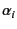
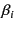
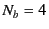

Table 9.2:
Connection table for the star configuration
in Fig. 9.2.
bond index


0
0
1
1
0
2
2
0
3
3
0
4
Figure 9.2 shows another example
forming a star configuration with and ,
that is, all the bonds are independent.
The connection table is given by Table 9.2.